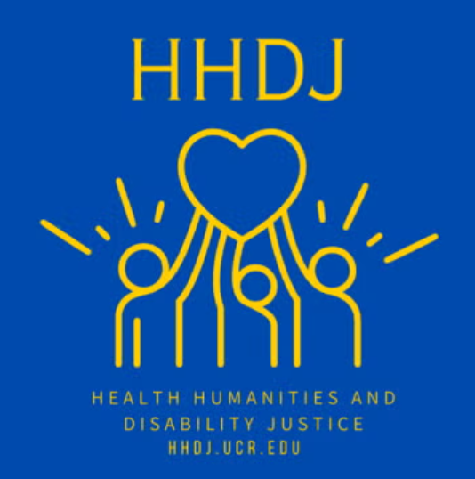

My Honors Capstone Project, titled “Equity in the Laboratory: Disability Access for Undergraduate Science Courses,” aims to serve as a foundation for advocacy in supporting the success of disabled students in science laboratories. This is through a call to action for a more robust accessibility policy and cultural shifts that directly address institutional ableism and support the full participation of disabled students in science laboratory classes, as argued in my capstone. While higher education institutions push for diversity, equity, and inclusion in science education, “equity is rarely conceptualized with adequate attention to access” (Reinholz and Ridgway, 2021). Disabled students continue to face exclusion due to the historical and ongoing design of science laboratories that primarily serve able-bodied individuals. Yet, as efforts introduce more physically accessible features, such as adjustable fume hoods and workbenches, these improvements do not fully address the broader challenges students encounter in relation to systemic ableist barriers. As “disability services are multidisciplinary, and comprehensive support requires the involvement of numerous stakeholders” (Acar et al., 2025), it is therefore critical to examine not only how aware students are of available resources, but the preparedness of teaching assistants (TAs) and instructors to support disabled students effectively.
This study aims to identify and analyze barriers to lab accessibility at the University of California, Riverside (UCR) through surveys with both permanently and temporarily disabled students who have been or are currently enrolled in the BIOL05L Series, BIOL020 Dynamic Genome Laboratory, CHEM01L Series, CHEM08L Series, BCH015, and/or PHYS02L Series (Physics for Life Science majors). A survey for TAs of the aforementioned courses will also be conducted regarding their level of training and awareness of accommodation practices. The resulting findings aim to identify existing gaps, as well as highlight current practices deemed successful through applications of a critical disability theory lens. This critical approach will also examine how a broader culture of holistically approaching accessibility at UCR from the social model of disability lens can improve the experiences of UCR science students and reduce the number of instances in which students cannot fully participate in the laboratory. This social model of disability, which defines disability by the sociological conditions imposed on people with disabilities, rather than an inherent ‘abnormality’ within disabled people, is a core tenet towards uncovering how structures in the UCR institution lead to gaps in student experience.